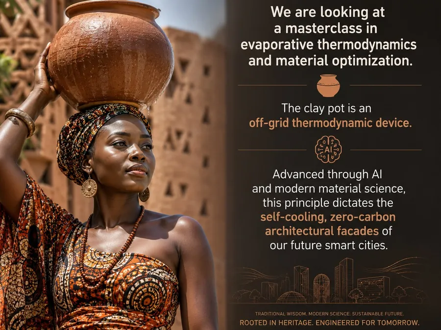
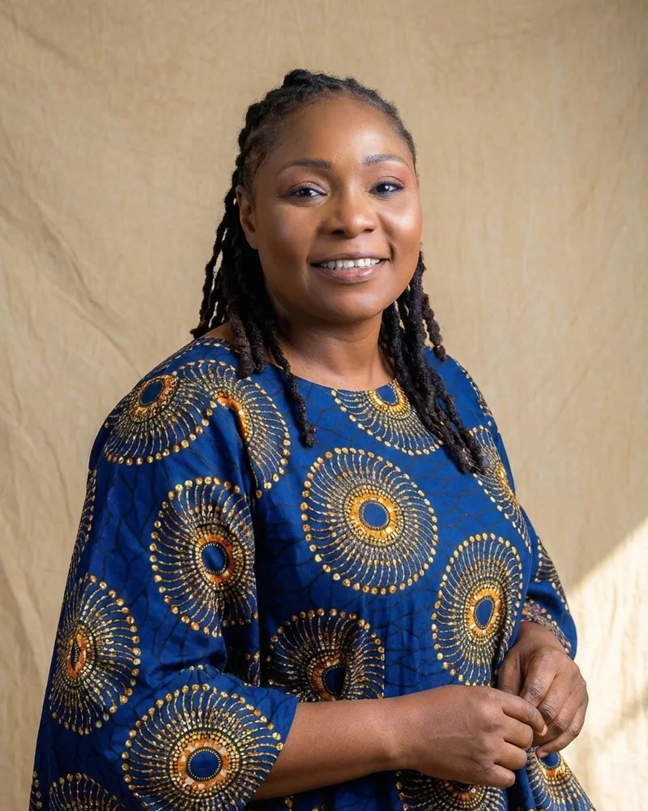

Kuifikiria Afrika Upya. Kurejesha Akili. Kufikiria Upya Mustakabali.
Jukwaa la habari linaloongozwa na utafiti, linalochunguza maendeleo, maarifa, utawala, utamaduni na uwezekano wa Afrika kwa mtazamo unaoweka Afrika katikati.

Jaribio la Africa Lens la Sekunde 90
Maswali saba. Gundua wasifu wako wa mjenzi wa mustakabali wa Afrika.
Tazama na usikilize
Afrika haikosi akili
Changamoto yake ni kwamba sehemu kubwa ya akili yake haijatambuliwa, kuboreshwa, kuwekwa katika taasisi, kufadhiliwa na kugeuzwa kuwa nguvu ya pamoja ipasavyo. Jukwaa hili linavuka kueleza matatizo ya Afrika: linauliza yalizalishwaje, nini kinayadumisha, maarifa gani yamepuuzwa, na njia mbadala zipi za vitendo zinaweza kujengwa. Soma zaidi kuhusu maono.
Kilichokatizwa kinaweza kurejeshwa. Kilichoahirishwa kinaweza kupatikana tena.
Hii si historia ya zamani. Hii ni sayansi iliyokatizwa.
Chungu cha udongo si alama ya umaskini; ni kifaa cha thermodinamiki kisichohitaji umeme, kilichoboreshwa kupitia vizazi vya majaribio. Kwa kutumia picha za kubuni za akili bandia (AI), tunaonyesha sayansi za Kiafrika zingekuwaje leo, kama maendeleo yake yasingekatizwa kwa nguvu.

Jinsi dunia inavyokiona Kilivyo hasa
Kilivyo hasa
“Ufundi wa kujikimu”: mtazamo wa kikoloni juu ya maarifa ya Kiafrika.
Thermodinamiki, ukokotoaji, uhandisi: hazina za kisayansi zinazosubiri kurejeshwa.
Hadithi tunayoifikiria upya


Mada sita kuu
Elimu & Maarifa
Jinsi elimu inavyounda utambulisho, matamanio, kazi na uwezekano wa Waafrika.
Utawala & Taasisi
Jinsi mataifa ya Afrika yanavyoweza kujenga mifumo inayoaminika, yenye uwajibikaji na iliyojikita katika utamaduni.
Maarifa Asilia & Ubunifu
Jinsi maarifa ya urithi yanavyoweza kuwa sayansi, biashara na viwanda vya kisasa.
Kazi, Uzalishaji & Ubora
Kwa nini Afrika huagiza utaalamu kutoka nje na jinsi uwezo wa ndani unavyoweza kuimarishwa.
Utamaduni, Utambulisho & Uhuru wa Kiafrika
Jinsi lugha, vyombo vya habari, dini na nguvu za kimataifa zinavyounda jinsi Waafrika wanavyojiona.
Mustakabali wa Afrika
Jinsi Waafrika wanavyoweza kubuni miji, taasisi, teknolojia na uchumi uliojikita katika hali zao halisi.
Kazi zilizoandikwa
Makala, muhtasari wa tafiti, orodha za kusoma na taarifa fupi za kupakua zinaambatana na vipindi. Hiki ndicho kinachotofautisha jukwaa hili na maoni matupu: kila dai linaweza kufuatiliwa hadi kwenye chanzo chake.
Ni maarifa gani wazazi wako walikuwa nayo ambayo kizazi chako hakikuyarithi?
Mustakabali wa Afrika hauwezi kufikiriwa na sauti moja
Leta utafiti wako, uzoefu wako, swali lako au hadithi yako katika mazungumzo.
Pendekeza kipindi au makala
Hadithi, uchunguzi au utafiti wako: ulete mezani.
Shiriki wazo lakoPendekeza sauti
Unamfahamu msomi, fundi, mzee au mvumbuzi ambaye Afrika inapaswa kumsikia?
Pendekeza mtuAlika au shirikiana
Mwalike Dr Damola kuzungumza, jitolee, au shirikiana katika utafiti.
Wasiliana nasiMfahamu Dkt. Damola

Dkt. Damola ni mchumi wa maendeleo, msomi anayeweka Afrika katikati, mtaalamu wa jumla wa akili bandia (AI), mkakati wa sera za umma na msanii wa muziki wa injili, mwenye uzoefu wa zaidi ya miaka 25 serikalini, katika vyuo vikuu na ushauri wa kimataifa. Kupitia Rethinking Africa analeta elimu ya kitaaluma kutoka kwenye maeneo yaliyofungwa hadi kwenye mazungumzo ya umma.
Kwa wasomi, wanafunzi, watunga sera, wataalamu, wabunifu, viongozi wa jamii, wanadiaspora, na kila mtu aliyejitolea kwa upya wa kifikra na kimaendeleo wa Afrika.
Jiunge na Waanzilishi 1,000
Kuwa miongoni mwa wanachama elfu moja wa kwanza wa vuguvugu la kurejesha akili na uhuru wa Kiafrika. Gundua mitazamo inayoweka Afrika katikati iliyojikita katika utafiti, tazama mazungumzo na wasomi na wataalamu, na upokee vipindi vipya, makala na mialiko ya matukio, ukianza na mfululizo wa bure wa Siku 7 za Kufikiria Upya.
Karibu kwa Waanzilishi 1,000.
Angalia kikasha chako: Siku ya 1 ya Siku 7 za Kufikiria Upya iko njiani.
Saidia mpango huu ukue
Rethinking Africa with Dr. Damola ni mpango huru. Msaada wako unagharamia utafiti, utayarishaji, tafsiri na uhifadhi wa maarifa ya Kiafrika, na unafanya jukwaa hili libaki bure kwa wanafunzi na jamii kote barani.